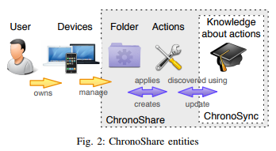

2017/09/18 - (Paper) The Story of ChronoShare, or How NDN Brought Distrubuted Secure File Sharing Back¶
Alex Afanasyev, Zhenkai Zhu, Yingdi Yu, Lijing Wang, and Lixia Zhang
In IEEE MASS 2015 Workshop on Content-Centric Networks (accepted), October 2015.
Full Content : Link
Introduction¶
ChronoShare is a completely distrubuted file sharing application based on ChronoSync.
A Few words about ChronoSync¶
ChronoSync enables dataset synchronization among a group of participants in a distributed way.
ChronoSync encodes the knowledge about the whole dataset into a compact crypto digest form(e.g. using SHA256). which we call the state digest. This digest is carried in a special “sync” Interest which reaches all participants in a group. Eventually, sync Interest from all participants will carry an indentical state digest, indicating the knowledge about the dataset has been synchronized, and there will be a pending sync Interest at each participant, awaiting for the new data to be generated.
ChronoShare Design¶
A. Design Decisions¶
Synchronize the file set of the shared folder.
ChronoShare treats individual user operations on files as streams of “actions”, where each action specifies which file has been modified and what changes has been made (new file, updated content, changed file system permissions, or removing a file).
B. System Entities, Roles, and Assumptions¶
ChronoShare is a general-purpose file sharing application, where users create or join shared folder on one or more of their devices.
Each shared folder is composed of a set of files, which were either locally created, or discovered (and subsequently fetched) via user action.
C. Data Naming¶
1). Files :
Files in ChronoShare’s shared folder are split into segments, each segment forming an NDN data packet that is named.
2). Actions :
Each user publishes a “stream” of actions under user’s namespace, which identifies the corresponding ChronoShare application and specific shared folder instance.
The content of the action does not need to include the full NDN name of the file in the shared folder, only the relative name of the file in the shared folder and additional meta information about the revision of this file.
3). Knowledge about actions (ChronoSync) :

ChronoShare defines a four component structure for sync Interests: multicast prefix, application and folder name, and dataset digest. The first component is to ensure that every participant receives the sync Interest; the middle two ensure that the right instances of ChronoShare will get the Interest; and the last component is computed over all user names plus their sequence numbers.
Similar to actions, the content of sync Data does not need to specify the full names of actions. Instead, sync Data specifies only action creator’s prefix and action sequence number.
D. Folder and File Operations¶
ChronoShare assumes that each device runs a local file manager, which detects file system changes and notifies ChronoShare to create new actions and distribute them to remote folders via ChronoSync.
F. Action and File Retrieval Strategy¶
In this prototype, ChronoShare fetch new actions for each participant in the order from the largest sequence number to the smallest. This way, multiple changes of the file by the same participant will be quickly reflected in the shared folder.
Summary¶
ChronoShare is based on ChronoSync, just like ChronoChat.
This idea is similar to version control system, but the difference is ChronoShare will forward action to tell everyone in group automaticly via ChronoShare.
In a small area, I think ChronoShare is a good solution to synchronize files because the delivery cost is lower than shared folder such as Dropbox or Google Drives.
But if in a big area, such as United State, the packets for synchronization may round-trip for a long way, and this special case would be inefficient.